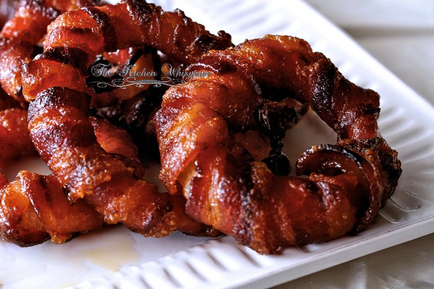

Bacon Onion Rings
The best crunchy bacon wrapped onion rings!
These rings are the perfect side this. They are perfect with every dish, on any occasion!
Ingredients
- 3 big white onions
- 24 slices smoked Bacon
- 2 tbsp BBQ-rub
- optional: 5 tbsp srirachasauce
Instructions
Prepare a BBQ with a lid. Peel the onions and slice them to around 1,5cm thick rings. Cover the rings with the bacon. sprinkle the BBQ-rub on the rings. Put the rings on the BBQ, indirect heat for about 40 minutes.optional: put some srirachasauce on the rings after 30 minutes and put them back on the grill for the last 10 minutes.